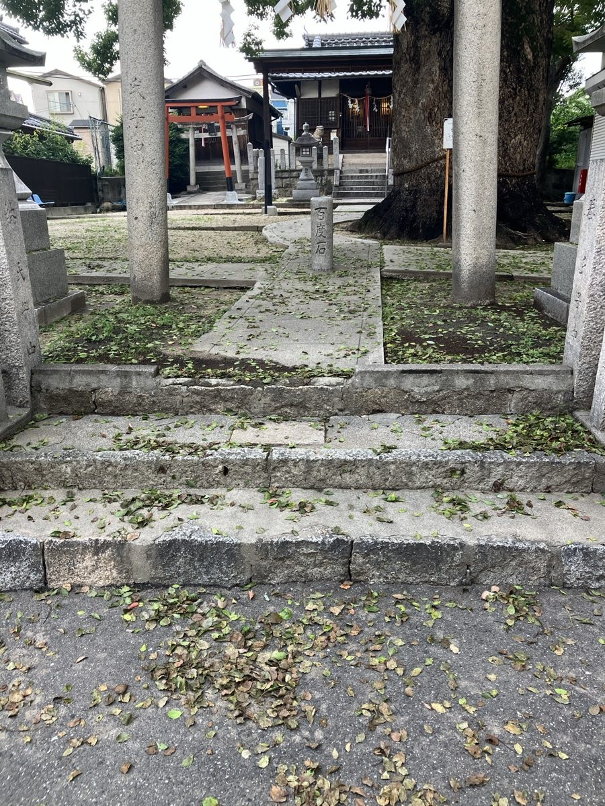
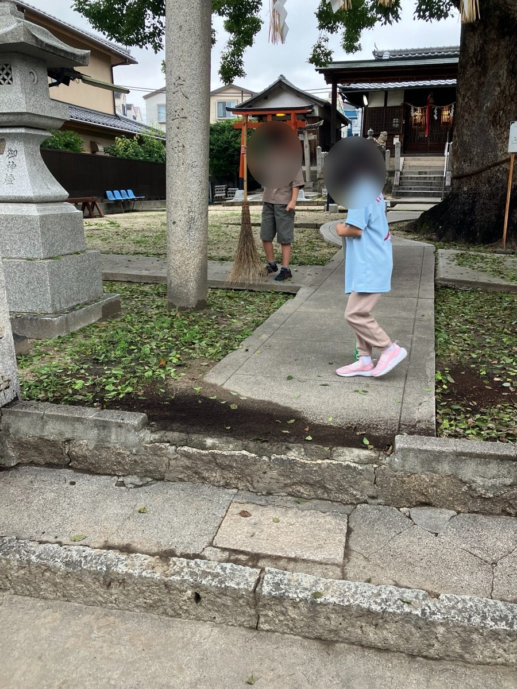
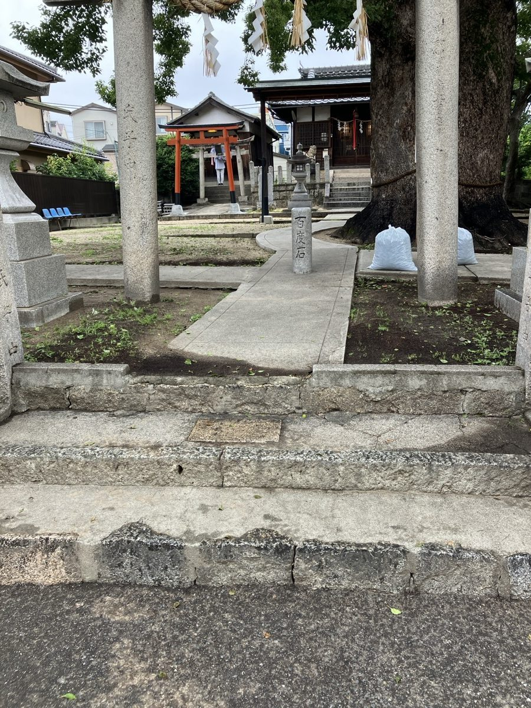

毎週日曜の朝に神社の清掃をしようと決めていたのですが、ここ2週間、日曜になると雨が降ってまともにできていませんでした。
このまま放置もできないので、今朝は月曜の朝6時に早起きして、気になっていたところだけリベンジしました。子どもたちにも声をかけて、一緒に手伝ってもらいました。

清掃前。石段や参道に葉っぱがたくさん落ちていました。

子どもたちが箒を持って一生懸命動いてくれました。
子どもたちは文句も言わず手を動かしてくれて、本当に助かりました。「やるやる！」と元気よく参加してくれる姿に、こちらも力をもらった気がします。

清掃後。参道がすっきり整いました。袋いっぱいの落ち葉も回収できました。
2週間分たまっていたのもあって、それなりの量になりましたが、やり終えると気持ちいい。境内がすっきりすると、なんだか清々しい気持ちになります。
日曜の定例清掃は天候次第で飛んでしまうこともありますが、できる日にこまめにやっていくしかないですね。雨が続いたとしても、晴れ間を見つけてコツコツと続けていきたいと思います。